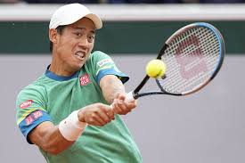
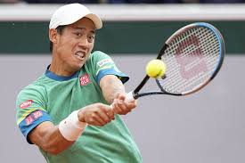

錦織 圭
アジア男子史上初のグランドスラム大会（4大大会）シングルスファイナリスト。
シングルスとしてはアジア史上初のATPワールドツアー・ファイナルズ出場者。
アジア男子史上初のグランドスラム大会（4大大会）シングルスファイナリスト。
シングルスとしてはアジア史上初のATPワールドツアー・ファイナルズ出場者。
グランドスラムは男女通じて歴代1位タイの優勝24回。
全豪オープン最多・最多連覇の3連覇、10回優勝。
ATPファイナルズ最多連覇・最多優勝の4連覇、7回優勝。ATPツアー・マスターズ1000では歴代最多優勝40回。